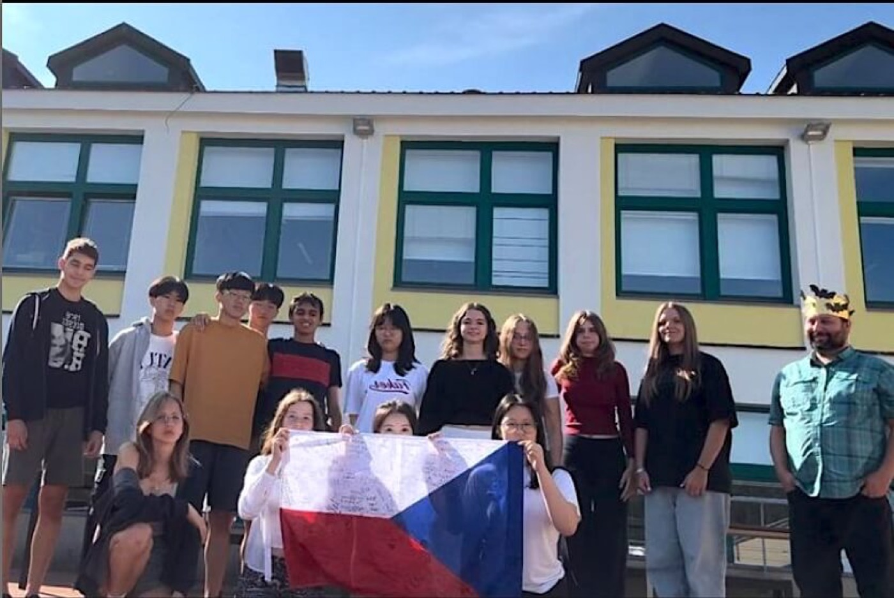

FGC · FTC · VEX
Naše výsledky sezónu po sezóně, tak daleko do minulosti, kam jsme je dohledali.
FIRST Global Challenge
Team Czechia 🇨🇿 · 2018–2026FIRST Global Challenge je robotická soutěž v olympijském stylu. Každá země vysílá jeden studentský tým a týmy z více než 190 zemí staví roboty na globální téma: energie, oceány, jídlo, životní prostředí. Každý rok tým tvoří studenti z celého robotického kroužku ISP.

FGC 2026 · Incheon
Team Czechia se vrací na světovou scénu.
PřipravujemeFGC 2025 · Eco Equilibrium
Soutěžili jsme s týmy z více než 190 zemí.
27. místoFIRST Global Slovakia 2025
Národní kolo v Aureliu, kde soutěžilo asi 100 studentů z 15 slovenských škol. Náš tým jsme rozdělili na tři menší týmy se třemi roboty.
2. místoFGC 2024 · Feeding the Future
14 studentů ISP soutěžilo na Olympijském stadionu s podporou českého velvyslanectví v Aténách.
FIRST Slovakia 2024
Naše první soutěž, na které týmy stavěly z dílů REV.
Mecha Falcons: 1. místo, Hardware Challenge · LionTech: Teamwork AwardFGC 2023 · Hydrogen Horizons
Team Czechia 2023.
FGC 2019 · Ocean Opportunities
Team Czech Republic 2019.
FGC 2018 · Energy Impact
První český tým na FGC složený ze studentů ISP.
FIRST Tech Challenge
Tým #11041 · první sezóna 2015–16Ve FTC studentské týmy navrhují, staví a programují robota pro každou sezónu na novou hru a soutěží v aliancích. FalconTech soutěží ve FTC od turnajů CEESA v polovině 10. let.
FTC 2026–27
Registrováni jako tým #11041. Sezóna právě běží.
Soutěž FTC na Slovensku
Sezóna 2025–26 pokračovala soutěží FTC na Slovensku.
Kvalifikace FTC Benelux · DECODE
Naše první oficiální soutěž FTC Benelux.
Sustain AwardItalské mistrovství · INTO THE DEEP
Soutěžili jsme na italském mistrovství FTC.
Skystone · Ultimate Goal · Freight Frenzy
Tým #11041 byl registrovaný tři sezóny po sobě, včetně let pandemie.
CEESA FTC 2017 · Velocity Vortex
13 škol z 11 zemí. FalconTech i Mecha Falcons soutěžili na domácí půdě.
Mistrovství světa FTC · Res-Q
Poprali jsme se se změnou pravidel na poslední chvíli a od přátelského týmu jsme si půjčili přitahovací mechanismus se svinovacím metrem. Nejlepší zápas: 312 bodů.
Turnaj CEESA / FTC · Res-Q
V kvalifikaci jsme skončili pátí a nizozemský tým WattsUp si nás vybral do semifinále.
Inspire Award → mistrovství světaCEESA FTC 2015 · Cascade Effect
ISP poprvé pořádala regionální turnaj FTC. Náš tým se jmenoval „Giancomo Rising“.
VEX V5 · CEESA
Každý únorKaždý rok jezdíme na robotický turnaj středních škol Central and Eastern European Schools Association (CEESA), kde soutěžíme s mezinárodními školami z Vídně, Varšavy, Budapešti, Bukurešti, Sofie, Skopje, Tirany a dalších měst.
CEESA VEX · Push Back
Pořádala Tirana International School. 24 týmů z 8 mezinárodních škol.
CEESA VEX · High Stakes
Každoroční robotický turnaj CEESA pro střední školy.
CEESA Robotics 2024
Pro mnoho našich členů to byla první soutěž vůbec.
Jeden tým ISP: 2. místoSt. Louis 2016: cesta k vítězství
V únoru 2016 pořádala ISP svůj druhý turnaj CEESA/FIRST Tech Challenge s týmy z Benátek, Varšavy, Bukurešti, Sofie, Tirany, Istanbulu, Moskvy, Haagu a Vídně. Roboti museli tlačit trosky do zón, spouštět lanovky a vyjíždět po rampách: 30 sekund autonomního režimu a pak dvě a půl minuty řízení piloty.
Robot zpočátku uměl jezdit jen dopředu a dozadu. Richard a Daniel programovali autonomní režim, Alex ladil ruční řízení a konstruktéři dokončovali poslední úpravy.
Richard jako drive coach, Alex jako hlavní pilot a Roman jako druhý pilot: tým bodoval hlavně vyjížděním na rampu a v kvalifikaci skončil pátý. Nizozemský tým WattsUp si nás vybral jako partnera do semifinále.
Do finále jsme se nedostali, ale FalconTech získal Inspire Award, nejvyšší ocenění ve FTC. Bylo to jedno z pouhých dvou ze sedmi ocenění, která zaručovala postup na mistrovství světa, takže ISP byla jedinou školou reprezentující Českou republiku v St. Louis, a pozvánku jsme dostali poprvé.
Původní článek napsala Violet Burbank (únor 2016). Videa natočil Roman Synovitz.
Z archivu
Roboti, stavění a soutěže z let FTC.